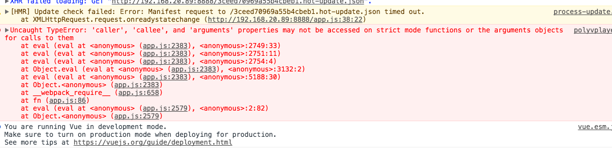
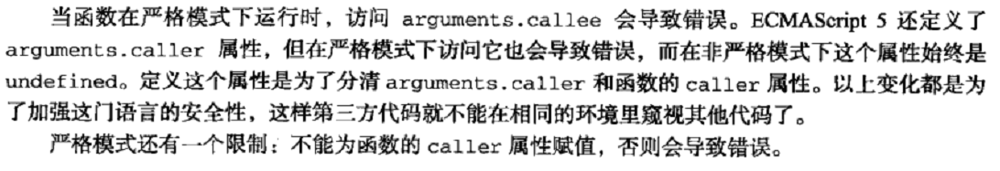

babel6默认添加use strict引发的问题和解决方案
2017-05-26 星期五 丁酉年 五月初一
【鸡年】乙巳月 癸丑日
宜：开市 交易 立券 安机械 会亲友
忌：嫁娶 出火 移徙 入宅
问题描述： 昨天使用vue做移动端的时候，由于公司使用了第三方视频服务，而第三方视频服务的js插件在我的vue框架下import进来时，由于代码写得很那啥~~ 然后就报错了：

这个原因就是在use strict这样的严格模式下，caller, callee, arguments不允许访问的，

所以肯定是在某个地方加入了严格模式use strict；最终想了想就是框架层在webpack打包时候做的事情，一部一个不跟下去找到是babel-loader的问题，上网一查，还是有一些人遇到这些问题的，也给出了解决方案:
问题的原因是babel的es2015预设中默认使用了babel-plugin-transform-strict-mode，为所有模块自动加上use strict， 所以才有了上面的问题。
解决方案当然也呼之欲出：
对于Babel5有一种特殊的解决方案：
// 在.babelrc文件中加入这样一行配置：
blacklist: ["useStrict"]
但是在Babel6中这个方案不生效，构建时会报错：
Module build failed: ReferenceError:
[BABEL] /Users/huaxia/icode/kkb/hybrid\app.js: Using removed Babel 5 option:
/Users/huaxia/icode/kkb/hybrid\.babelrc.blacklist -
Put the specific transforms you want in the `plugins` option
问题很明显，Babel6已经不支持blacklist这个option了，所以问题的答主给了一个babel6的解决方案：
因为babel给所有模块自动加'use strict'是通过babel-plugin-transform-strict-mode这个插件加的，因此在配置babel的时候不要使用es2015 的preset，自己手动指定plugins列表，把这个plugin排除在外不引进来就可以了。
查阅ES2015的preset发现压根没有这个plugins，在工程里的node_modules下搜索了一下，发现这个plugin是从transform-es2015-modules-commonjs这个插件里引入的。
至此终于定位到问题的根源了。
由于无法限制ES2015模块依赖ES5的模块，所以理论上来说，只要是在ES2015模块里加了use strict，都会存在潜在的风险。所以最好的方式是去掉这个插件，或者再用一个插件移除掉所有的use strict，这样保证所有代码都在非严格模式下执行即可。
第一个方案显然是不靠谱了，除非不写import，否则必须要引入transform-es2015-modules-commonjs插件来做ES2015 -> commonJS Module 的转换，而引入了这个插件，就必须要引入babel-plugin-transform-strict-mode插件，这个很难在配置层面做到限制。
所以只能转向第二个方案：再写一个babel插件把所有的use strict干掉就可以了。习惯性地上github上搜索了一下，居然还真搜到了一个包：babel-plugin-transform-remove-strict-mode。果真是万能的Github！！！
确认无误后，在package.json文件中的devDependencies中加入
"babel-plugin-transform-remove-strict-mode":"^0.0.2"
然后在.babelrc文件中新增配置：
{
"presets": [
"es2015"
] ,
"plugins":[
"transform-runtime",
// 下面这行
"transform-remove-strict-mode"
]
}
就这样问题解决了
然鹅可能你还会遇到其他问题，遇到其他问题那就不是babel的事情了，就该解决其他问题了，我遇到的是第三方视频插件（还必须用它！！！）由于最新版不兼容，所以直接使用的上一个版本才解决了...
万幸~~~

微信打賞

支付寶打賞